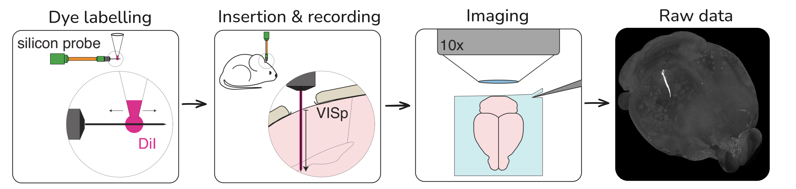
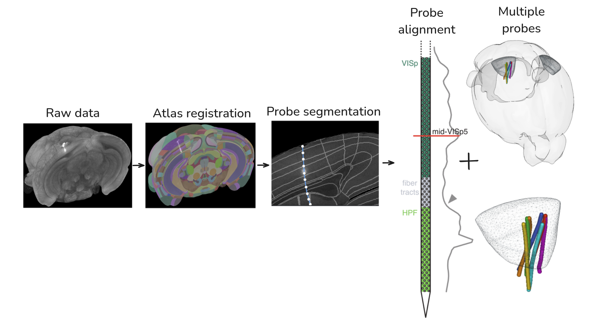
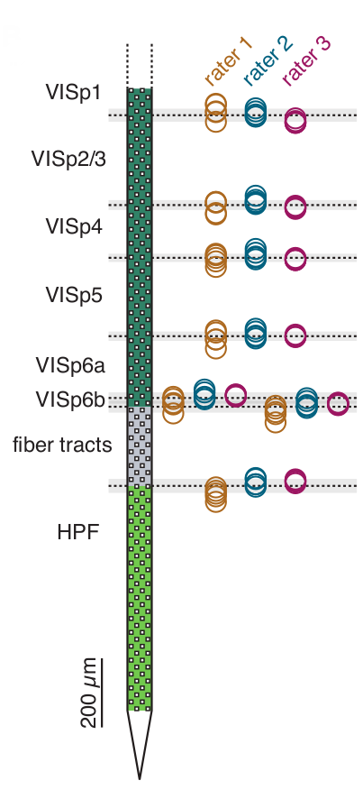
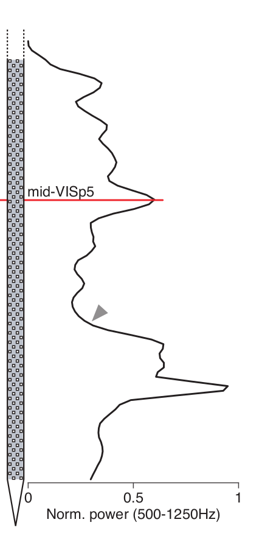
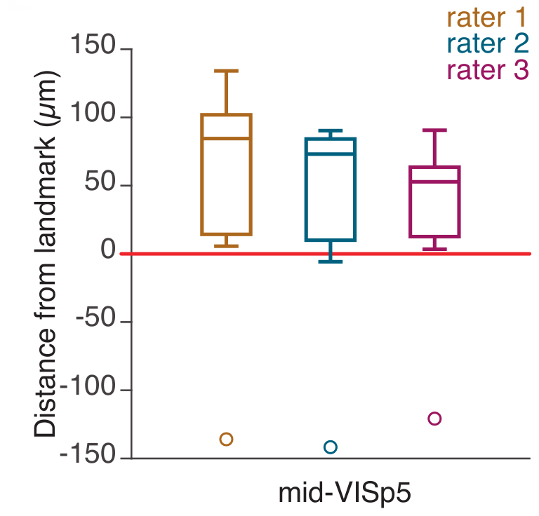
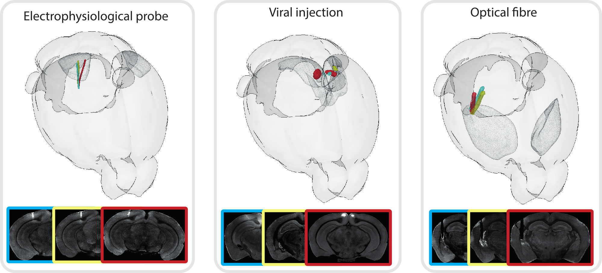
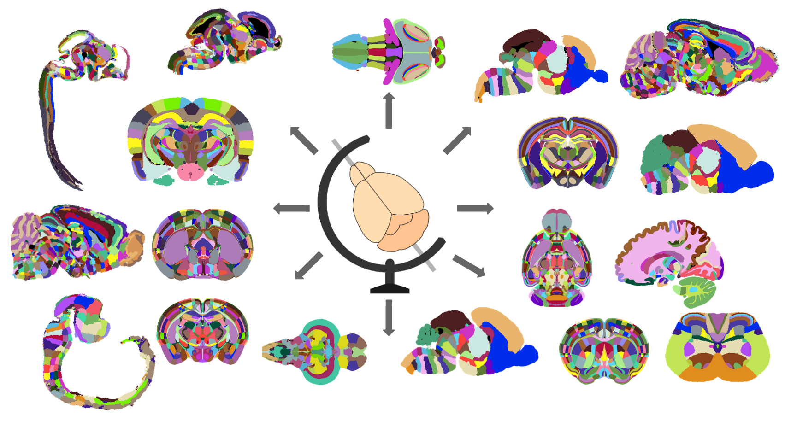

Aligning spikes to histology with BrainGlobe
Neuroinformatics Unit, Sainsbury Wellcome Centre & Gatsby Computational Neuroscience Unit, UCL.
Aligning spikes to histology
- Record from 100’s of cells at once
- Need to know where these recordings are from
- Need to combine recordings from multiple animals
Probe track labelling & imaging

Atlas alignment

brainreg & brainglobe-segmentation

Validation



Demo
Output
| Position | Region ID | Region acronym | Region name |
|---|---|---|---|
| 0 | 593 | VISp1 | Primary visual area, layer 1 |
| 1 | 593 | VISp1 | Primary visual area, layer 1 |
| 2 | 593 | VISp1 | Primary visual area, layer 1 |
| … | |||
| 55 | 821 | VISp2/3 | Primary visual area, layer 2/3 |
| 56 | 821 | VISp2/3 | Primary visual area, layer 2/3 |
| … | |||
| 998 | 632 | DG-sg | Dentate gyrus, granule cell layer |
| 999 | 632 | DG-sg | Dentate gyrus, granule cell layer |
Other structures

BrainGlobe
BrainGlobe Atlas API

Current atlases
| Atlas Name | Resolution | Ages | Reference Images |
|---|---|---|---|
| Allen Mouse Brain Atlas | 10, 25, 50, and 100 micron | P56 | STPT |
| Allen Human Brain Atlas | 500 micron | Adult | MRI |
| Max Planck Zebrafish Brain Atlas | 1 micron | 6-dpf | FISH |
| Enhanced and Unified Mouse Brain Atlas | 10, 25, 50, and 100 micron | P56 | STPT |
| Smoothed version of the Kim et al. mouse reference atlas | 10, 25, 50 and 100 micron | P56 | STPT |
| Gubra’s LSFM mouse brain atlas | 20 micron | 8 to 10 weeks post natal | LSFM |
| 3D version of the Allen mouse spinal cord atlas | 20 x 10 x 10 micron | Adult | Nissl |
| AZBA: A 3D Adult Zebrafish Brain Atlas | 4 micron | 15-16 weeks post natal | LSFM |
| Waxholm Space atlas of the Sprague Dawley rat brain | 39 micron | P80 | MRI |
| 3D Edge-Aware Refined Atlases Derived from the Allen Developing Mouse Brain Atlases | 16, 16.75, and 25 micron | E13, E15, E18, P4, P14, P28 & P56 | Nissl |
| Princeton Mouse Brain Atlas | 20 micron | >P56 (older animals included) | LSFM |
| Kim Lab Developmental CCF | 10 micron | P56 | STP, LSFM (iDISCO) and MRI (a0, adc, dwo, fa, MTR, T2) |
| Blind Mexican Cavefish Brain Atlas | 2 micron | 6-dpf | IHC |
| BlueBrain Barrel Cortex Atlas | 10 and 25 micron | P56 | STPT |
| UNAM Axolotl Brain Atlas | 40 micron | ~ 3 months post hatching | MRI |
Support
Contributors
Stephen Lenzi, Rob Campbell, Joe Ziminski, Sofia Miñano, Niko Sirmpilatze, Nicholas Del Grosso, Laura Porta, Lee Cossell, Antonin Blot, David Pérez-Suárez, David Stansby, Will Graham, Patrick Roddy, Adrien Berchet, Mathieu Bourdenx, Ben Kantor, NovaFae, David Young, Sam Clothier, Gubra-ApS, Kailyn Fields, ramroomh, Samuel Diebolt, Chris Roat, Oren Amsalem, kclamar, Draga Doncila Pop, juanma9613, Jules Scholler, Iaroslavna Vasylieva, Nicolas Peschke, Justin Kiggins, Peter Sobolewski, Simão Bolota, chili-chiu, jaimergp, Sebastian Lammers, Matt Colligan, Paul Brodersen, Carter Peene, francesshei, Sean Martin, Adam Tyson, Federico Claudi, Luigi Petrucco, Christian Niedworok, Charly Rousseau, Horst Obenhaus, Chryssanthi Tsitoura, Sepiedeh Keshavarzi, Mateo Vélez-Fort, Ben Dichter, 4iar, Marco Musy, Anna Medyukhina, stegiopast, EmanPaoli, lidakanari, Alexis Arnaudon, Yaroslav Halchenko, Ziyang Liu, Philip Shamash, koushik-ms, Harald Reingruber, Emily Jane Dennis, Peak, Maximilian Blacher, Hernando Martinez Vergara, Estelle, nicole-vissers, GD, Michael Kunst, Estelle Nassar, Sara Mederos, Igor Tatarnikov, Viktor Plattner, Carlo Castoldi, Jingjie Li, Guillaume Le Goc, Harry Carey, Matt Einhorn, Kimberly Meechan, Robert Kozol, Roberto, Axel Bisi, Jung Woo Kim, Saima Abdus, Saarah Hussain, Sacha Hadaway-Andreae, Presa, Henry Crosswell, Nischit Kumar, Kirato Yoshihara, Leonard Schwigon, Dinora Abdulazhanova, Katrin Haase, Dominik Heyers, Isabelle Museliak, Henrik Mouritsen, Simon Weiler, Stella Prins, Richard Dushime, Miguel Xochicale, M S P, Abdul Samad, Prisha Sharma, Farida Yusuf, Anshu Saini, Menna1812, ayush2281, BethCr, Swapnaneel Patra, Xiaoyu Deng, DwarvesEatRocks, DPWebster, Conrad, pranav33317, Biswanath Saha, Federico F., Tim Monko, Kaixiang Shuai, Giulia Paci, Marco Dalla Vecchia, Pavel Vychyk, Ishrat Zaman
Resources
BrainGlobe website: brainglobe.info
GitHub: github.com/brainglobe

brainglobe.info